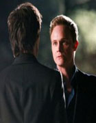

EPISÓDIO 18 – UNDER CONTROL

DAVID ANDERS (“24h”) APARECE COMO CONVIDADO INTERPRETANDO O TIO DE ELE,
JONH GILBERT: Enquanto Stefan (Paul Wesley) luta para controlar sua
nova situação, Elena (Nina Dobre) e Jeremy (Steven R. McQueen) são
surpreendidos pela visita de seu tio, John Gilbert (ator convidado
David Anders). Alaric (Matt Davis) tem uma conversa constrangedora
com Elena sobre Isobel. No evento do Dia do Fundador, Stefan demonstra
um estranho comportamento festeiro, e a tentativa de Damon (Ian Somerhalder)
em descobrir por que Tio John retornou para a cidade tem uma virada
desastrosa. Um incidente na festa causa problemas entre Matt (Zach Roerig)
e Tyler (Michael Trevino)… E o relacionamento entre Matt e sua mãe, Kelly
(atriz convidada Melinda Clarke), atinge um novo nível. Enquanto isso, os
esforços de Elena em confortar Jeremy não dão certo e ele decide resolver as
coisas com suas próprias mãos. Sara Canning também estrela o episódio.
Ir para GUIA PRIMEIRA TEMPORADA